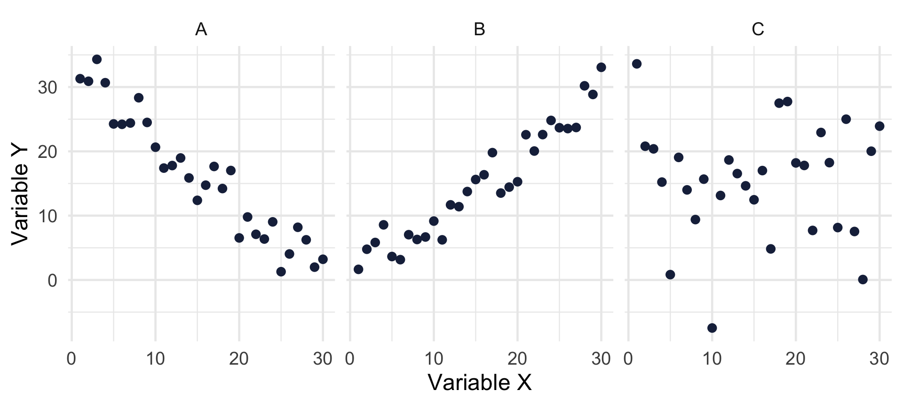
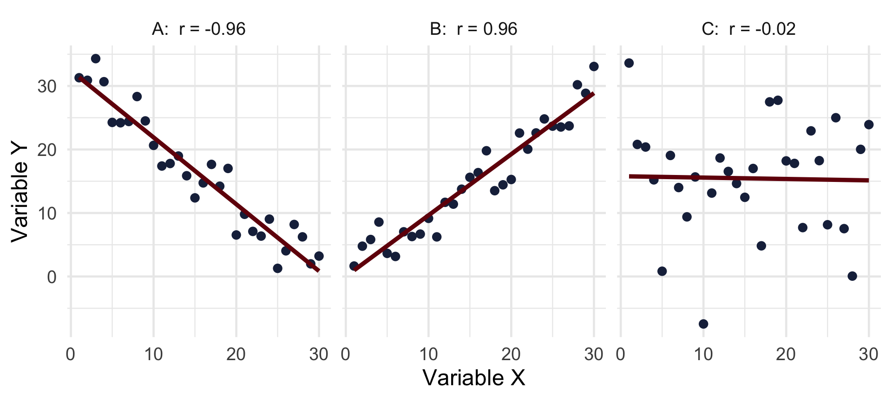
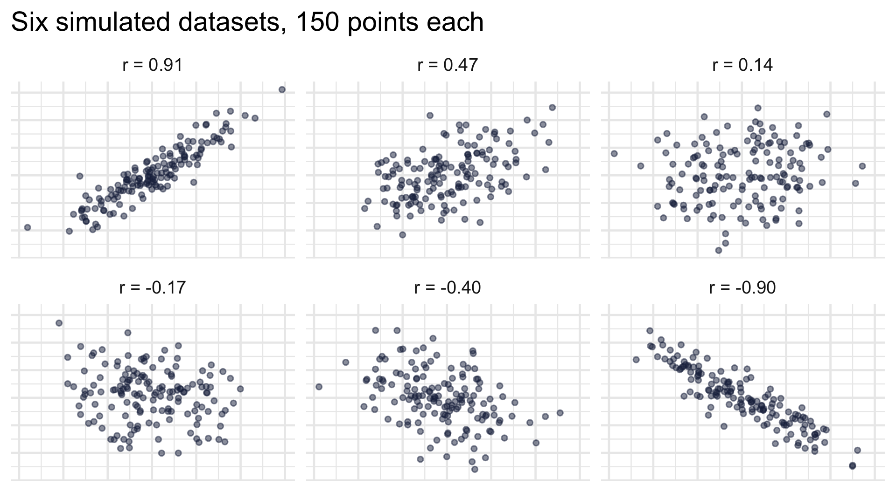
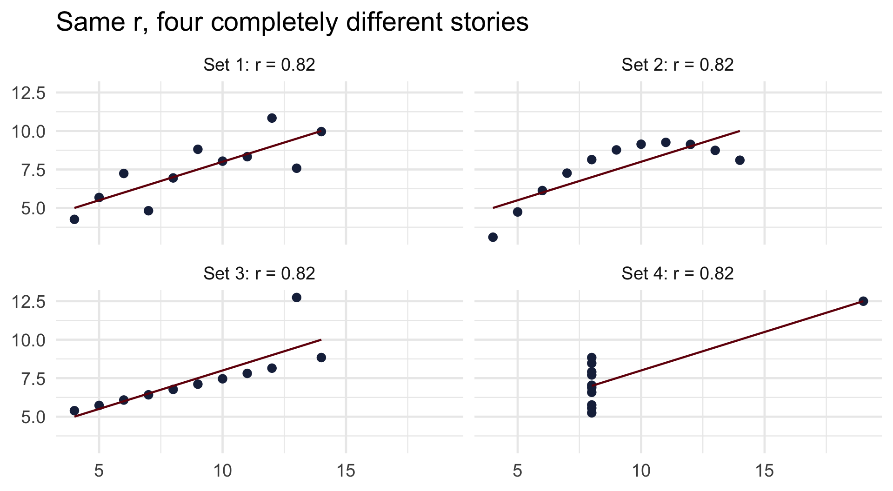
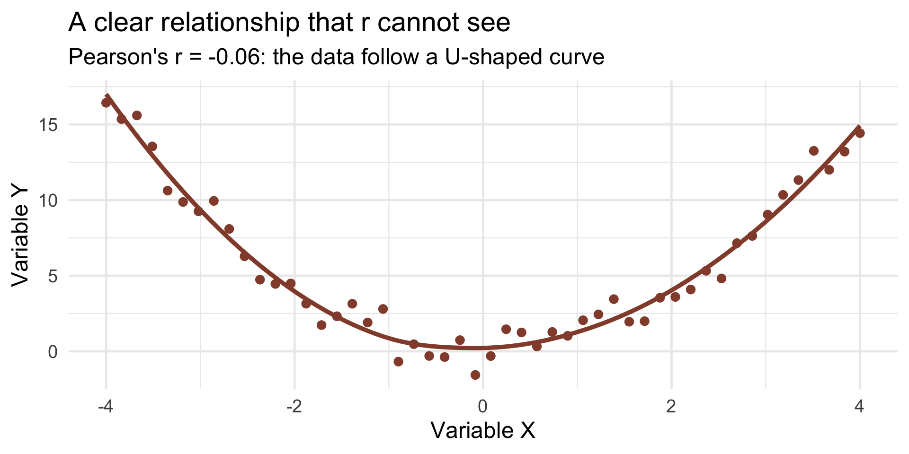
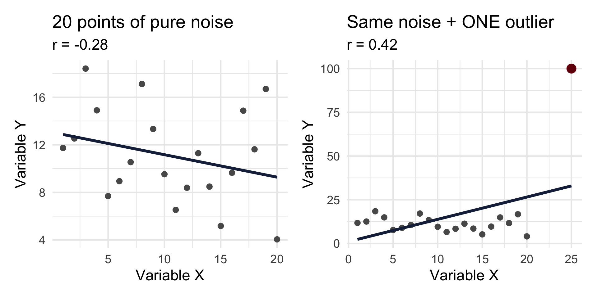
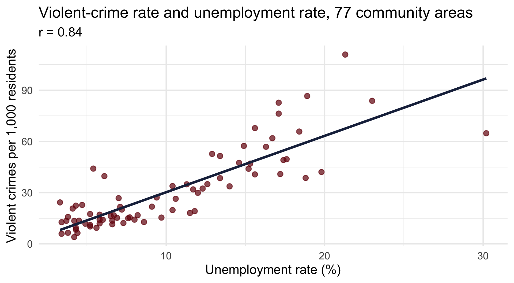
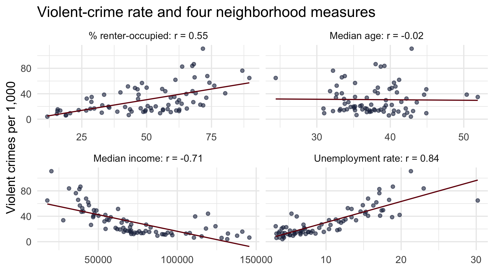

[1] 107.7543[1] -482660.1CRJU 705 · Session 8 · Fall 2026
Topic: one new tool, then we get ready for next week’s midterm.
Learning goals: read r’s sign and strength; test it with cor.test(); explain why a correlation between areas says nothing about people.
Lecture
Correlation: what r is, what it cannot see, and how to test it
Lab 8
The recipe on two datasets, and you write the code
Midterm review
What’s on the exam, and one practice problem per part
Everything I run tonight is written up in the demo walkthrough.
| The outcome is… | Compared across… | Test |
|---|---|---|
| yes/no | two groups | prop.test() and bayes_prop_test() |
| a number | two groups | t.test(outcome ~ group, data = ) |
| a number | another number | cor.test(x, y) |
Sessions 5 to 7 were all about groups. Tonight every row has two numbers: do they rise and fall together? This is the doorway to regression (Sessions 10 and 11).
When two variables move together, how can we describe that relationship?
Direction is only half the story. The strength of the relationship tells how tightly the changes are linked. That’s the number we build today.
Positive, negative, or nothing? Make your call for each panel:


The lines make it obvious, and the r values put a number on what your eye already knew.
Your turn: give me a CJ example of each, and one pair you suspect people believe is correlated but isn’t.
Row by row: do x and y sit on the same side of their averages?
\[\text{cov}(x, y) \;=\; \frac{\sum_i (x_i - \bar{x})(y_i - \bar{y})}{n - 1}\]
Two covariances with violent crime, from Chicago’s 77 community areas:
[1] 107.7543[1] -482660.1Is -482,660 a “stronger” relationship than 108? No idea. The first number is in dollars times crimes per 1,000; the second in percentage points times crimes per 1,000. Covariance is glued to its units, so you can’t compare across pairs.
Divide the covariance by both standard deviations and the units cancel:
\[r \;=\; \frac{\text{cov}(x, y)}{s_x \, s_y}\]
cov(areas$unemployment_rate, areas$violent_rate) /
(sd(areas$unemployment_rate) * sd(areas$violent_rate))[1] 0.8398579[1] 0.8398579Always between -1 and +1, no units, comparable. Income runs r = -0.71 with violence, so unemployment (0.84) tracks violence more tightly than income does, direction aside.
| r (either sign) | Strength | What the scatterplot looks like |
|---|---|---|
| 0.8 to 1.0 | Very strong | Dots hug a line |
| 0.4 to 0.7 | Moderate | A clear trend, with plenty of scatter |
| 0.1 to 0.3 | Weak | A slight tilt you might not see without the line |
| about 0 | None (no straight-line pattern) | A shapeless cloud |
The sign gives the direction: + means both rise together; - means one rises as the other falls. These bands are conventions, not laws: in messy social-science data, a “moderate” r can be a major finding.

By 0.5 (either sign) the trend is visible; below 0.2 your eye mostly sees noise, and it’s right.
anscombe_long <- anscombe |>
pivot_longer(everything(), names_to = c(".value", "set"), names_pattern = "(.)(.)")
anscombe_long |>
summarize(mean_x = mean(x), mean_y = mean(y), r = cor(x, y), .by = set)# A tibble: 4 × 4
set mean_x mean_y r
<chr> <dbl> <dbl> <dbl>
1 1 9 7.50 0.816
2 2 9 7.50 0.816
3 3 9 7.5 0.816
4 4 9 7.50 0.817Four little datasets that ship with R (Anscombe, 1973). Same averages, same r = 0.82. Statistically interchangeable. Right?

Only Set 1 is what you picture when someone says “r = 0.82.” Always plot before you correlate.

Think stress and performance: an upside-down U. r near 0 means no straight-line relationship, not no relationship.

Replace each value with its rank (1st, 2nd, 3rd…), then correlate the ranks. Spearman asks only: is the relationship consistently up, or consistently down?
c(pearson = cor(outlier_data$x, outlier_data$y),
spearman = cor(outlier_data$x, outlier_data$y, method = "spearman")) pearson spearman
0.4235804 -0.1142857 To Spearman, the wild point is just “rank 21”: rho drifts from -0.29 to -0.11, still weak, while Pearson flipped sign. When data are skewed or have wild values, check Spearman alongside Pearson.
The anchor data’s second level (codebook): all 237,472 of 2025’s incidents, added up to the 77 community areas and joined with Census measures:
# A tibble: 3 × 5
community violent_rate unemployment_rate median_income pct_vacant
<chr> <dbl> <dbl> <dbl> <dbl>
1 Rogers Park 21.7 7.1 60916 9.5
2 West Ridge 12.2 7.3 70823 7.7
3 Uptown 22.8 4.7 70067 9.1A classic question about places: which features of a neighborhood track its violence? Correlation is the right first tool.

One dot = one community area. This is about as strong as area-level associations get in criminology.

Strong positive, moderate positive, strong negative, and one genuine nothing (median age). Real data span the whole menu.
Our r = 0.84 says: community areas with higher unemployment rates record more violent crime per 1,000 residents.
The ecological fallacy: using an association between groups (areas, states, cities) to make claims about individuals. Our data contain no individuals. Nothing here says unemployed people commit violence.
The classic example (Robinson, 1950): across U.S. states, more immigrants went with higher literacy. Across individuals, immigrants had lower literacy. Immigrants had settled in states with high literacy. Adding people up into areas can weaken, exaggerate, or even flip a relationship.
✅ Defensible:
“Community areas with higher unemployment rates recorded higher violent-crime rates (r = 0.84).”
❌ Not defensible:
“Unemployed residents commit more violent crime.” (A claim about individuals. These data can’t see individuals.)
“Unemployment drives up violence.” (A claim about cause. Concentrated poverty, disinvestment, and policing patterns all lurk behind both variables.)
We can see r = 0.84. The same question as every test since Session 6:
cor.test()
Pearson's product-moment correlation
data: areas$unemployment_rate and areas$violent_rate
t = 13.4, df = 75, p-value < 2.2e-16
alternative hypothesis: true correlation is not equal to 0
95 percent confidence interval:
0.7585749 0.8954023
sample estimates:
cor
0.8398579 Median age and violence, from the menu slide:
Pearson's product-moment correlation
data: areas$median_age and areas$violent_rate
t = -0.1336, df = 75, p-value = 0.8941
alternative hypothesis: true correlation is not equal to 0
95 percent confidence interval:
-0.2385791 0.2092774
sample estimates:
cor
-0.01542445 Interval -0.24 to +0.21: zero is inside. Fail to reject. Say no evidence of a straight-line association, which is not proof there is none.
Real analyses rarely stop at one pair. cor() takes every numeric column you give it:
violent_rate unemployment_rate median_income pct_vacant
violent_rate 1.00 0.84 -0.71 0.81
unemployment_rate 0.84 1.00 -0.81 0.67
median_income -0.71 -0.81 1.00 -0.55
pct_vacant 0.81 0.67 -0.55 1.00Read it like a mileage chart: each pair appears twice, and the 1s down the diagonal are each variable with itself. Handy for a first look at your project variables. Then plot and cor.test() the pairs that matter.
“Across Chicago’s 77 community areas, unemployment was strongly associated with the violent-crime rate, r = 0.84, 95% CI 0.76 to 0.90, p < 0.001. This is an area-level association; it does not speak to individuals.”
Direction, strength, uncertainty, and the level of analysis. Every time.
pct_no_hs_diploma is the share of an area’s adults without a high-school diploma. Before you compute anything: write down your guess for the sign and rough size of its correlation with violent_rate.
areas <- read_csv("https://smourtgos.github.io/crju705/data/chicago-areas.csv")
ggplot(areas, aes(pct_no_hs_diploma, violent_rate)) + geom_point()
cor.test(areas$pct_no_hs_diploma, areas$violent_rate)Most people guess a strong positive. The data: r = 0.17, p = 0.13, no evidence of an association. Yet pct_bachelors runs -0.45. Sensible-sounding measures can fail, and related measures tangle together. Untangling them is exactly what regression does in Session 10.
.R script and the data files; you answer in the script and submit it# comments| Part | Topic | Points | Where we did it |
|---|---|---|---|
| 1 | Data and levels of measurement | 10 | Sessions 1 and 2 |
| 2 | Descriptive statistics | 20 | Session 2 |
| 3 | Probability, sampling, and Bayes counting tables | 20 | Sessions 3 and 4 |
| 4 | Confidence intervals and t.test() |
20 | Sessions 5 to 7 |
| 5 | Frequentist and Bayesian: p-values, bayes_prop_test() |
15 | Sessions 6 and 7 |
| 6 | Correlation | 15 | Tonight |
The next slides are one practice problem per part. Different data from the exam, same skills.
Crash data: nominal, ordinal, interval, or ratio?
road_condition (normal, wet, icy)severity (coded 1, 2, 3, from least to most severe)driver_agevehicle1_yearNominal (no order) · ordinal (ordered, uneven spacing, even when stored as 1, 2, 3) · ratio (true zero) · interval (equal steps, no true zero: year 0 is not “no year”)
On the exam: explain each level, with your own CJ example. Order, spacing, zero.
[1] 4.375[1] 2[1] 6.390562A risk tool flags people as “likely to reoffend.” 10% of people actually reoffend. The tool flags 80% of those who do, and 20% of those who don’t. Out of 1,000 people: of everyone flagged, what share actually reoffends?
| Flagged | Not flagged | Total | |
|---|---|---|---|
| Reoffends | 80 | 20 | 100 |
| Does not | 180 | 720 | 900 |
| Total | 260 | 740 | 1,000 |
P(reoffends | flagged) = 80 / 260 = 0.31. The “80%” is P(flagged | reoffends), the other conditional. Read the bar out loud: whatever follows it is the denominator.
t.test()Were intoxicated drivers younger than sober drivers, on average? (Intoxicated first, set by a factor() line.)
t.test()
Welch Two Sample t-test
data: driver_age by intox
t = -0.72468, df = 1808.5, p-value = 0.4687
alternative hypothesis: true difference in means between group Intoxicated and group Sober is not equal to 0
95 percent confidence interval:
-1.0104429 0.4652006
sample estimates:
mean in group Intoxicated mean in group Sober
38.33204 38.60466 ggplot(crashes, aes(intox, driver_age)) + geom_boxplot()) shows you the answer before the test doesLab 7: suspicious-person stops vs traffic stops, searched or not.
prop.test())bayes_prop_test()source("bayes.R") (the file is in the exam folder)
Bayesian test of two proportions
data, group 1: 3,214 of 20,485 (15.7%)
data, group 2: 2,023 of 23,214 (8.7%)
prior: know-nothing (1 yes, 1 no), same for both groups
estimate 95% credible interval
group 1 15.7% 15.2% to 16.2%
group 2 8.7% 8.4% to 9.1%
difference (1 minus 2) 7.0 points 6.4 to 7.6 points
Probability group 1 is higher than group 2: more than 0.99
Probability group 1 is lower than group 2: less than 0.01 You did it tonight. On the exam, the same four steps:
cor.test(x, y). Report r, the confidence interval, and the p-valuelibrary(tidyverse) and library(modeest) loadbrms for Session 10CRJU 705 · Session 8